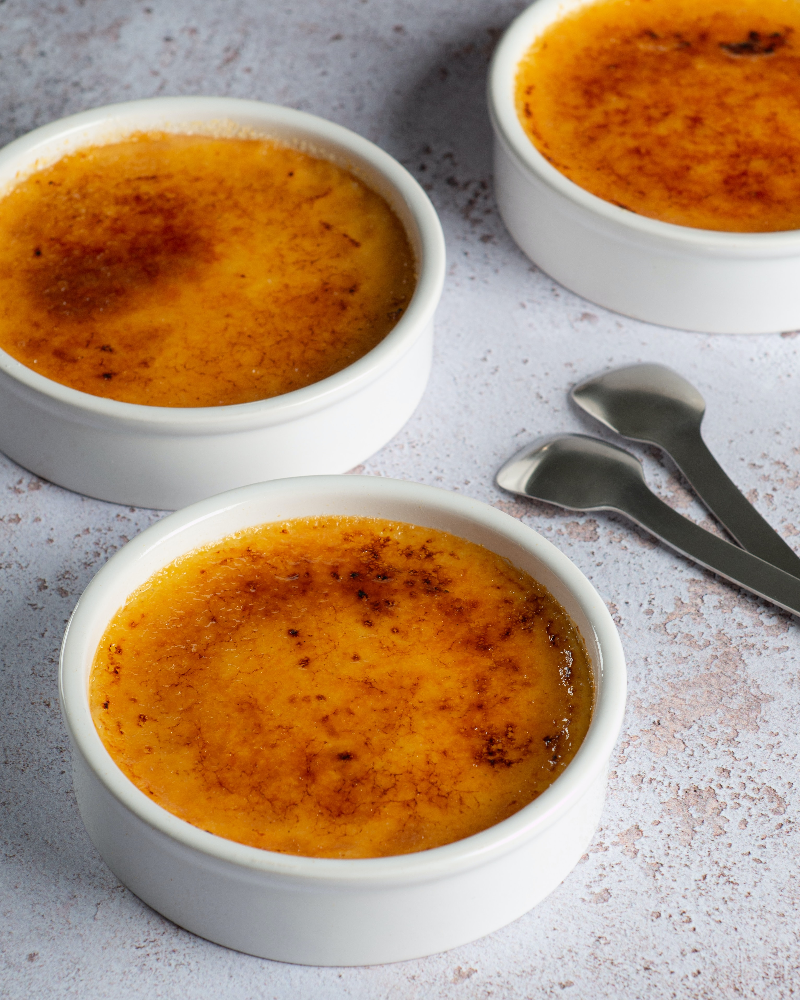

Creme Brulee

Description
Savor the richness of creme brulee with a blend cream,
vanilla, and egg yolks. Bake until just set, refrigerate, then caramelize
sugar on top before for a decadent treat. Ingulcence perfected in
three simple steps.
Ingredients
- 2 cups of heavy or light cream, or HALF&HALF
-
1 vanilla bean, split lengthwise, or 1 teaspoon of vanilla extract
- 1/8 teaspoon of salt
- 5 egg yolks
- 1/2 cup of sugar
Steps
-
Preheat the oven to 162°C. In a saucepan, combine the cream, split
vanilla bean, and salt; heat on low until warm. Let it sit for a few
minutes, then discard the vanilla bean. (If using vanilla extract, add
it now).
-
In a bowl, mix the egg yolks and sugar until smooth. Add about a quarter
of the cream to this mixture, then pour the sugar and egg mixture into
the cream and stir. Pour into four 6-ounce molds and place them in a
baking dish; fill the dish with boiling water halfway up the sides of
the molds. Bake for 30 to 40 minutes, or until the centers are just set.
Cool completely. Refrigerate for several hours and up to a couple of
days.
-
When ready to serve, cover each custard with about a teaspoon of sugar
in a thin layer. Place the molds under a broiler 2 to 3 inches from the
heat source. Turn on the broiler. Cook until the sugar melts and browns
or even slightly chars, approximately 5 minutes. Serve in two hours.